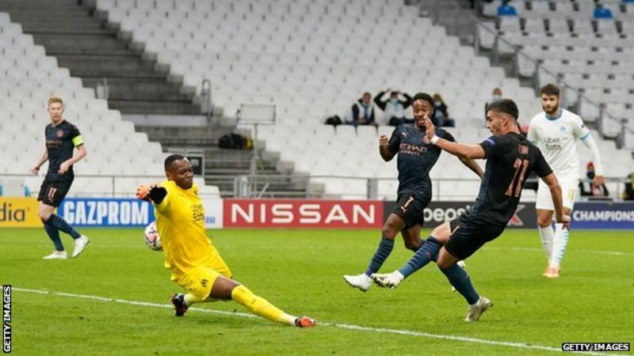
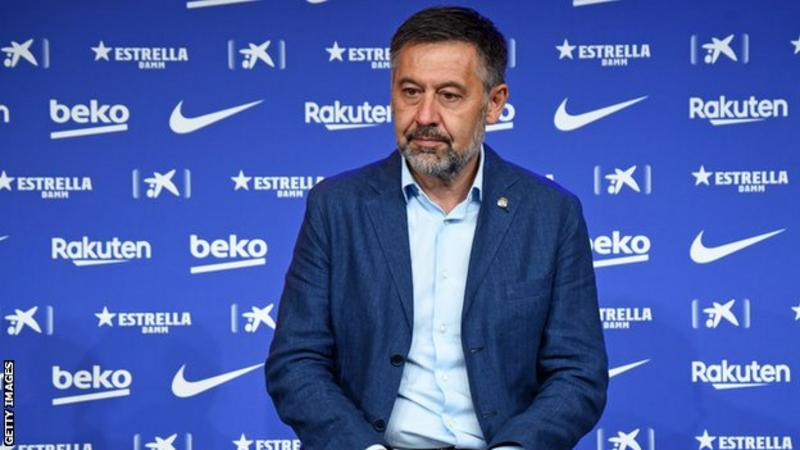
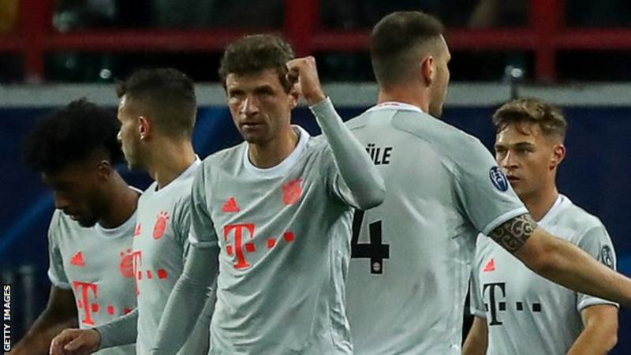
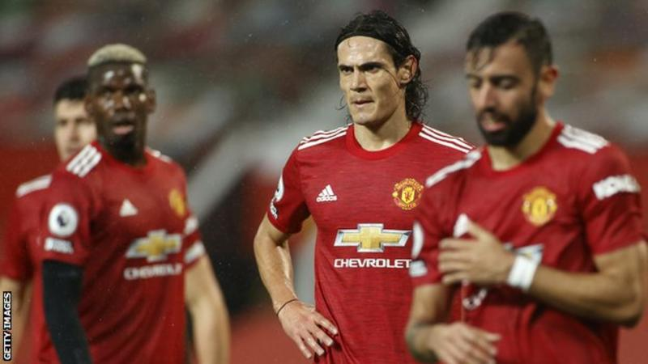
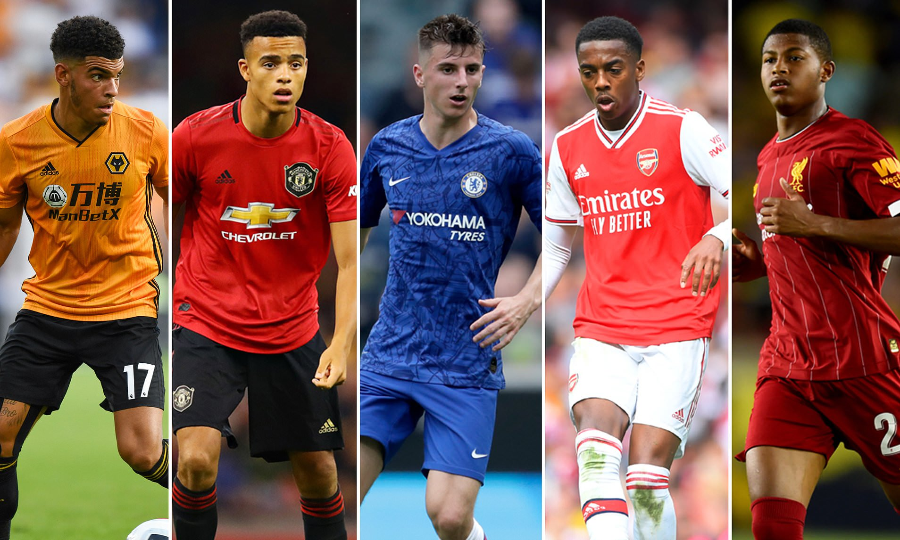

Latest News and matches
What happenned and when ?


Barcelona president Josep Maria Bartomeu Resigns -
Barcelona president Josep Maria Bartomeu has resigned under increasing pressure, what does this mean for Barca

Late Kimmich's Stunner extends winning run -
Champions League holders Bayern Munich extended their winning run in the competition to 13 games as they edged past Lokomotiv Moscow.They Look Unstoppable

Manchester United ready to take on Leipzig -
Manchester United will use same squad as Saturday's 0-0 draw with Chelsea for Wednesday's Champions League visit of LeipzigThe Wonderkids in the Premier league, who has got an upper hand ?

The Best Young Players to look for in the coming year 2021
Morgan Gibbs-White (Wolves)
19, central midfielder, English
Another member of the England team that won the Under-17 World Cup two years ago and another who'll hope
that
2019-20 brings more chances to impress.
Gibbs-White started five Premier League matches in a very talented Wolves team last term and should be in
line
for more as they juggle the Europa League as well this season.
He came through the Wolves academy and is a dynamic presence with excellent vision to find the right pass.
Gibbs-White can also play in a holding or advanced midfield role.
Wolves finished seventh last season and will want to be pushing the established top six even closer this
time.
Mason Greenwood (Manchester United)
17, forward, English
The buzz and excitement in Manchester United's academy around Greenwood has burst into the open this
pre-season after he scored in their tour matches against Leeds United and Inter Milan.
Greenwood scored 30 goals across three academy age group sides last season, enough to win the club's
prestigious Jimmy Murphy Youth Team Player of the Year accolade.
And all of a sudden, after a promising pre-season and amid the Romelu Lukaku transfer situation, Greenwood
could be involved in United's Premier League opener against Chelsea on Sunday.
Manager Ole Gunnar Solskjaer was certainly full of praise: 'He can play all of the front three positions, or
across the front four, as he can play No 10, No 7, No 11 and No 9.'
Mason Mount (Chelsea)
20, attacking midfielder, English
With club legend Frank Lampard at the helm and amid a transfer embargo, there may finally be a chance for
Chelsea's many talented academy graduates to shine.
After seriously impressing under Lampard's mentorship during a season on loan at Derby, many feel Mason
Mount
is best placed to capitalise on the opportunity.
Mount is very much in Lampard's mould, a technically-gifted advanced midfielder with an eye not only for a
killer pass but also for goal.
With so many youngsters unable to make the grade at Stamford Bridge in recent years, perhaps it's a positive
sign of change that Mount was handed a new five-year deal shortly after Lampard's arrival.
Callum Hudson-Odoi and Tammy Abraham will be others hoping to win regular first-team football under Lampard.
Joe Willock (Arsenal)
19, central midfielder, English
It's been a highly impressive pre-season from the teenager and Willock appears to have forced his way into
Unai Emery's thinking ahead of the new campaign.
Following Aaron Ramsey's departure to Juventus, there could well be a space in the Gunners' midfield and the
19-year-old looks set for more than just cameos this time around.
Last season he played two matches in the Europa League, scoring against Vorskla Poltava, and he netted twice
in the win over Blackpool in the third round of the FA Cup.
In a similar way to striker Eddie Nketiah, Willock will be hoping for an increase in game time, especially
in
the Premier League.
Rhian Brewster (Liverpool)
19, striker, English
After a nightmare 18 months recovering from serious knee and ankle injuries, it took a personal reassurance
from Jurgen Klopp to keep Brewster at Anfield.
Klopp promised the 19-year-old he would have a first-team role during the forthcoming campaign and be
afforded
the opportunity to showcase his myriad talents.
Though he didn't get on the field at any point, winning a Champions League medal was a powerful reminder
that
Brewster could do great things in his Liverpool career.
While he will be behind Mohamed Salah, Sadio Mane and Roberto Firmino in the pecking order, there should be
opportunities for Brewster if he stays injury free.